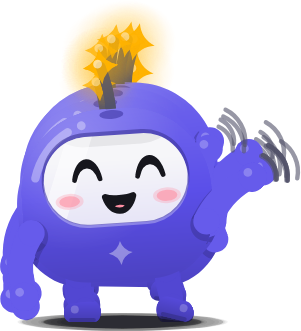
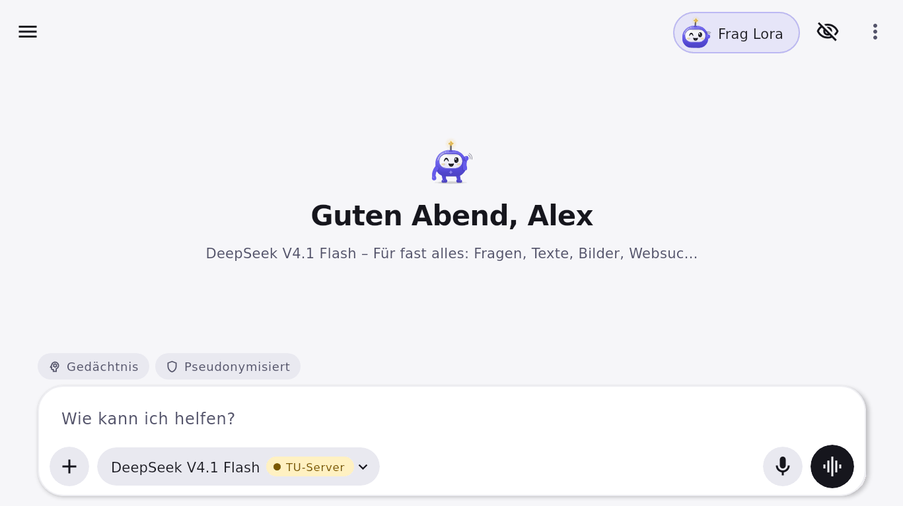
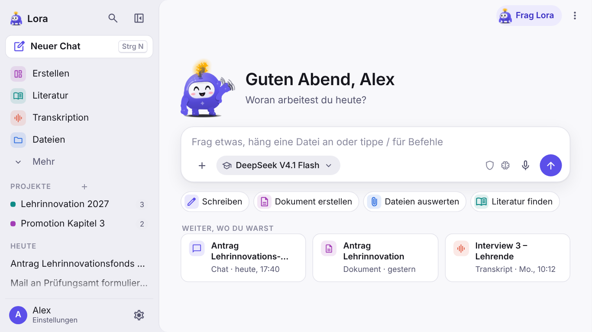
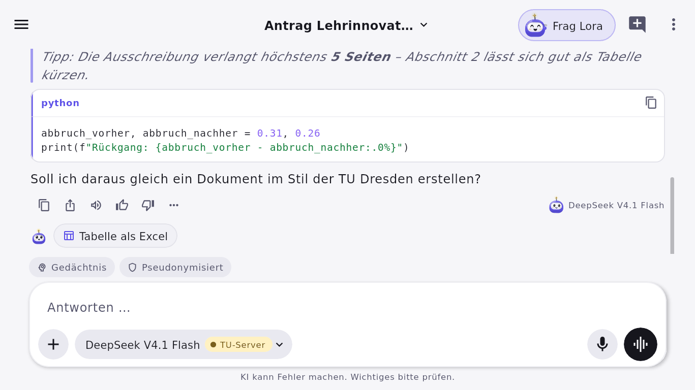
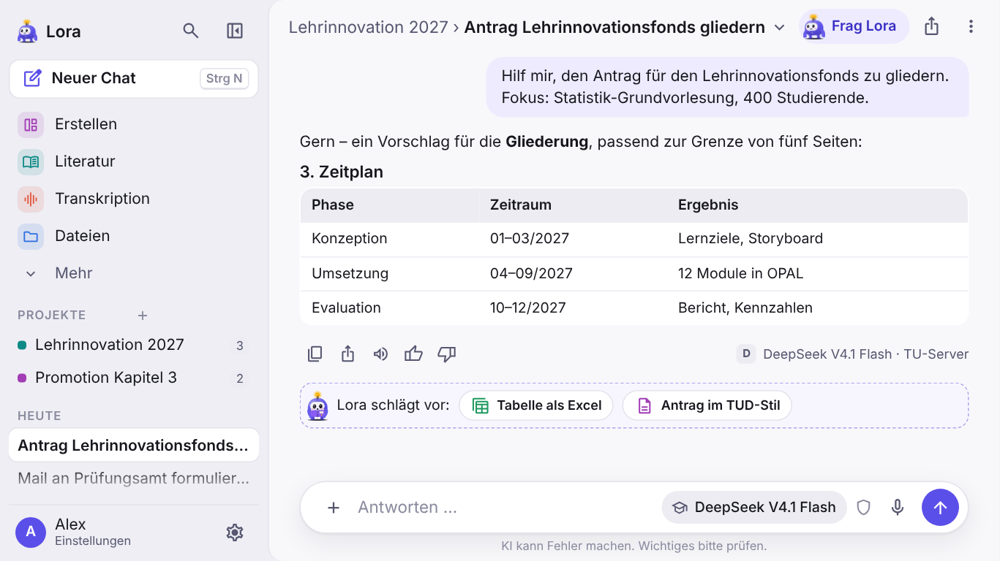
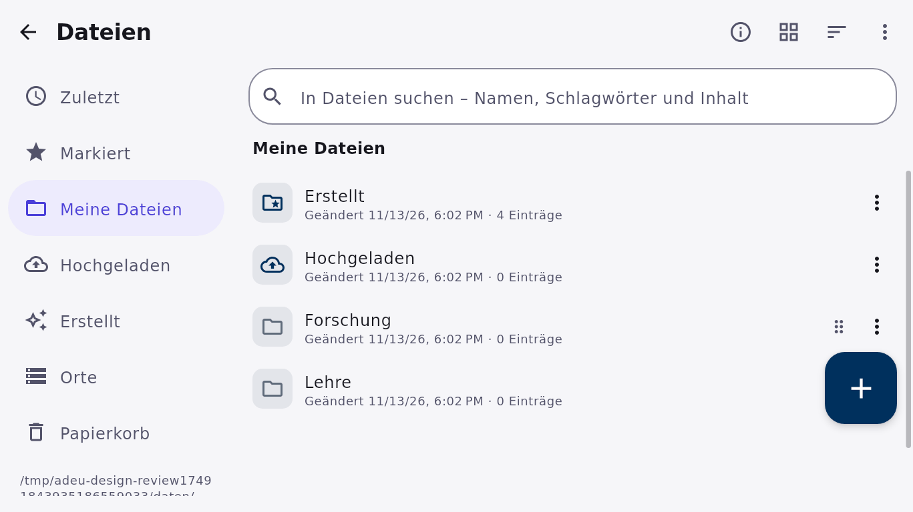
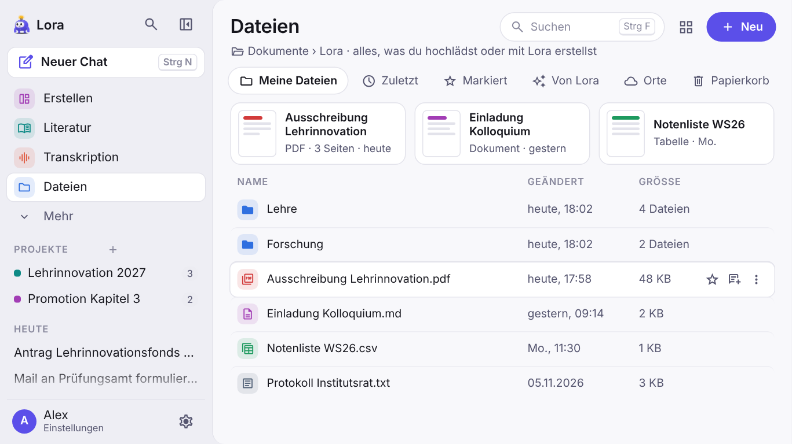
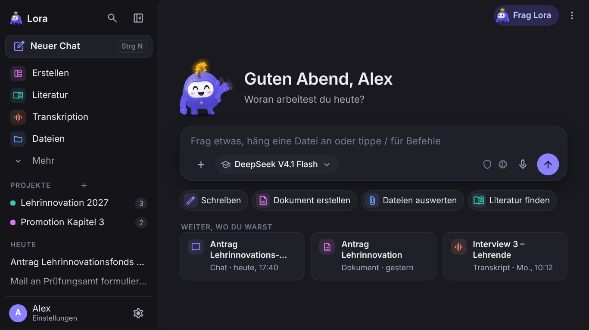
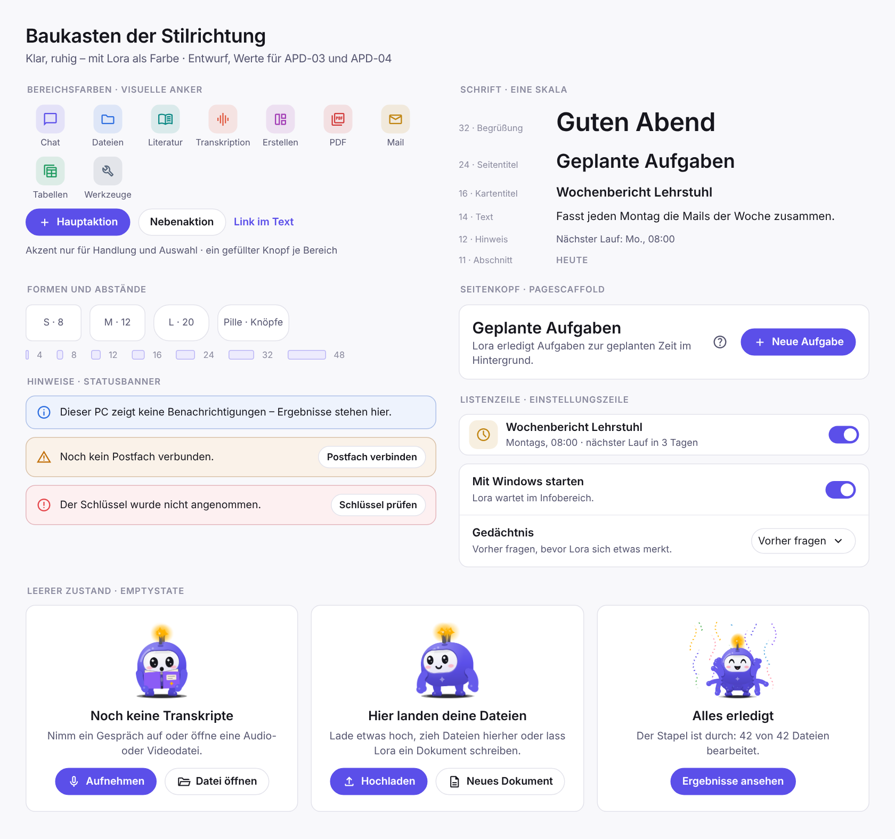

Ein vollständiges Review der App aus rund 300 Bildern aus einem Test, eine Stilrichtung, die zur neuen Lora passt, und 13 Pakete in der Reihenfolge, in der sie am meisten bringen. Unten kannst du Richtung und Reihenfolge freigeben, verschieben oder streichen.

Die Bilder stammen aus dem kleinen Maßstab des Design-Arbeitsplans, 1366 × 768 bei 150 % (911 × 512 dp). Die App öffnet aber mit 1180 × 820 dp. Nachgeprüft in fünf echten Fenstergrößen: Seitenleiste nur als Overlay, leere Startseite und knappe Schreibfläche gibt es nur im kleinen Fenster; Erstellen und Wortbrüche nur in Handy-Breite. US-Datum und HTTP-401-Fehler kommen vom englischen Testrechner und vom Beispielschlüssel. Bestätigt bei üblichen Größen: der Gestalten-Editor (auch bei 1920 × 1080 bei 150 % und im Standardfenster) und die Willkommenskarte. Sie verliert unter ≈ 950 dp Höhe unten unsichtbar den Teil „alles auf diesem Gerät“, während Rahmen und Ecken vollständig aussehen. Die Befunde zu Einheitlichkeit, Farben, Texten und leeren Zuständen gelten unabhängig von der Größe.
Offene Frage: Welche Bildschirme und Skalierungen sind bei euch üblich? Danach richtet sich, wie wichtig die Befunde für kleine Fenster sind.
1 sehr gut bis 5 mangelhaft. Übersicht: finde ich mich zurecht? Bedienung: komme ich schnell ans Ziel? Ausstrahlung: wirkt es seriös, modern, hochwertig?
| Bereich | Übersicht | Bedienung | Ausstrahlung | Kurz |
|---|
Bild aus dem Test, was stört, und der Vorschlag. Alle 89 Befunde mit Ort im Code stehen in docs/design/review-2026-11.md. Klick auf ein Bild vergrößert es.
Die Oberfläche wird ruhig, hell und präzise. Farbe kommt von Lora, vom Akzent für Handlungen und von gedämpften Bereichsfarben als visuelle Anker. Kein Comic, keine Verläufe – die Qualität kommt aus Gliederung, Abständen und Typografie. Lora bleibt poppig und steht genau deshalb gut davor.
Seitenleiste eine Stufe dunkler, Inhalt als helles Blatt, Schwebendes (Menüs, Dialoge, Eingabefeld) mit weichem Schatten.
Akzent nur für Handlung und Auswahl. Zustände fest mit Symbol. Bereichsfarben als Kacheln:
32 · 24 · 20 · 16 · 14 · 12 – Begrüßung, Seitentitel, Abschnitt, Kartentitel, Text, Hinweis. Abschnitte überall als kleines Label in Großbuchstaben.
Drei Radien (8 · 12 · 20), Pillen nur für Knöpfe und Chips, Abstände im 4er-Raster, Rahmen statt Schatten.
Titel, ein Satz, rechts genau ein gefüllter Hauptknopf; „Frag Lora“ im Kopf statt schlafend über dem Inhalt.
Startseite, Panel, Einrichtung, leere Zustände, Erfolg, Hilfe – in drei Größen. Nie als Modell-Avatar, nie über Inhalt.


Seitenleiste bleibt stehen, Lora begrüßt groß neben dem Gruß, das Eingabefeld rückt in die Mitte, darunter eine Reihe Startaktionen mit Bereichsfarben und „Weiter, wo du warst“. Graue Kontext-Chips werden zu Status-Symbolen in der Eingabeleiste, Senden im Akzent statt Schwarz.


„Neuer Chat“ wird ein Knopf mit Strg+N, Bereiche bekommen Farbkacheln, Projekte Farbe und Zähler, Chats sind sofort sichtbar. Im Chat: Titel mit Projektpfad statt gekürzt, ein neutrales Symbol für das Modell, Loras Vorschläge als eigene, klar erkennbare Zeile.


Seitenkopf mit Suche und einem Hauptknopf, Ort statt Pfad, Abschnitte als Reiter, „Zuletzt“ als Karten mit Vorschau, Liste mit farbigen Typ-Kacheln, Spalten und deutschem, relativem Datum; Aktionen erscheinen beim Darüberfahren.


Dieselben Tokens tragen das dunkle Design. Der Baukasten zeigt die Bausteine, die mit APD-03 und APD-04 in die App kommen – vom Seitenkopf bis zum leeren Zustand mit Lora.
Erst echte Fehler (klein, ohne Umbau), dann der Baukasten, dann die Bildschirme nach Häufigkeit. Mit den Pfeilen verschiebst du ein Paket, rechts gibst du es frei, stellst es zurück oder streichst es. Deine Auswahl bleibt in diesem Browser gespeichert.
Fasst Freigabe, Reihenfolge und Streichungen zusammen. Kopieren und im Chat einfügen.